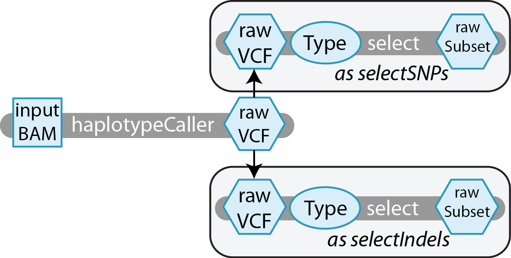
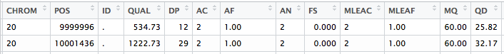

[2] (howto)编写一个简单的多步骤工作流¶
Requirements
本演练假定您对GATK的工具有(非常)基本的了解，并且您已经阅读了入门指南。您应该已经安装了必要的工具，并学习了前面的教程，因为我们将从使用它的脚本开始。最后，您需要下载包含本教程数据的zip包。我们将使用一个玩具数据集:NA12878, 20号染色体的子集。包中的文件在随附的自述中进行了描述。
介绍¶
在本教程中，您将学习如何向任务调用传递输入、编写分支的多步骤工作流和应用任务别名。您还将学习一个简单的技巧，以减少向一组任务输入相同数据的次数。我们将通过添加一个名为select的步骤来扩展您在前一个教程中编写的脚本。这个任务将被haplotypeCaller调用的SNP和indel变量分离到单独的文件中。这是我们偶尔需要做的事情，以不同的方式处理snp和indel，例如在对一个变量callset应用硬过滤器时。让我们看看我们的工作流程图:
通过绘制一个类似于上面的图表来开始您的管道写作总是有用的。正如您将在接下来的小节中看到的，我们将经常引用这个图。它充当您的工作流和每个单独任务的大纲。
写你自己的脚本¶
将前面创建的helloHaplotypeCaller脚本复制到一个新的文本文件中，我们将其命名为simplevariantselect.wdl。
Workflow¶
在我们开始编写新任务之前，让我们先看看我们的工作流如何将这些任务组合在一起。在上面的图表中，您可以看到如何将haplotypeCaller的输出输入到下一步的输入中;我们将告诉Cromwell具体怎么做。我们已经有了一个简单调用haplotypeCaller步骤的工作流，现在让我们调用剩下的每个步骤:
workflow SimpleVariantSelection { call haplotypeCaller { input: } call select { input: } call select { input: } }
我们的工作流根据前面的流程图对每个任务进行调用。但是，这两个相同的select调用稍后会造成麻烦。Cromwell不允许我们调用同一个任务两次，因为第二次调用会覆盖前一次生成的数据。幸运的是，我们可以使用一种叫做任务别名的东西来给任务起一个特定的名字，就像这样:
workflow SimpleVariantSelection { call haplotypeCaller { input: } call select as selectSNPs { input: } call select as selectIndels { input: } }
这类似于为您的输入声明一个变量名—您只是给了该任务调用一个您可以引用它的变量名。当我们想对输出做一些事情时，我们将调用selectSNPsrawSubset，而不是selectrawSubset——但这是另一个教程的主题。
接下来让我们尝试添加输入。任务haplotypeCaller是我们工作流程的起点，它需要一个输入bam。此文件将直接传递到任务，因此不需要在这里的工作流中指定它。对于剩下的任务，我们必须指定将从工作流中的前面步骤生成的输入。要指定输入，请遵循下面的格式
- ::
- input: inputname=taskname.outputname
因此，为了告诉我们的select步骤从haplotypeCaller获取rawVCF输出，我们写入input: rawVCF=haplotypeCaller.rawVCF。只需遍历每个任务调用，并按照流程图正确分配输入。
workflow SimpleVariantSelection { call haplotypeCaller { input: } call select as selectSNPs { input: type=, rawVCF=haplotypeCaller.rawVCF } call select as selectIndels { input: type=, rawVCF=haplotypeCaller.rawVCF } }
该任务select有一个名为type的输入，它不接受任何早期步骤的输入。只需传入一个字符串，就可以将类型指定为INDEL或SNP。
workflow SimpleVariantSelection { call haplotypeCaller { input: } call select as selectSNPs { input: type="SNP", rawVCF=haplotypeCaller.rawVCF } call select as selectIndels { input: type="INDEL", rawVCF=haplotypeCaller.rawVCF } }
现在，所有的输入都分配好了，工作流程应该完成了，对吗?不完全是——每个任务都需要一些变量。最初，我们在haplotypeCaller任务定义中声明了这些变量，但是现在我们将设置传递变量。我们在haplotypeCaller中没有做任何更改，但是我们将在工作流中声明额外的变量，并将这些变量作为输入传递给每个命令，如下所示。这样，当我们生成输入文件时，我们只需要告诉Cromwell工具、参考文件和样本名称在什么地方。如果你曾经见过一个蹒跚学步的孩子，你就会知道一遍又一遍的回答同一个问题是多么的乏味。
workflow SimpleVariantSelection { File gatk File refFasta File refIndex File refDict String name call haplotypeCaller { input: sampleName=name, RefFasta=refFasta, GATK=gatk, RefIndex=refIndex, RefDict=refDict } call select as selectSNPs { input: sampleName=name, RefFasta=refFasta, GATK=gatk, RefIndex=refIndex, RefDict=refDict, type="SNP", rawVCF=haplotypeCaller.rawVCF } call select as selectIndels { input: sampleName=name, RefFasta=refFasta, GATK=gatk, RefIndex=refIndex, RefDict=refDict, type="INDEL", rawVCF=haplotypeCaller.rawVCF } }
就是这样!您的工作流程已经完成。
Tasks¶
haplotypeCaller
如果您还没有编写这个任务，请参考前面的教程了解如何编写它。
select
这个任务使用GATK的selectvariant来在vcf中从snp中分离indel。首先，建立一个大纲，包括所需的部分存根和传递变量:
task select { File GATK File RefFasta File RefIndex File RefDict String sampleName command {} output {} }
在我们的初始图之后，我们需要向这个任务添加两个输入:字符串类型和文件rawVCF。对于我们的命令，我们将像在命令行上那样调用selectvariant，但是像以前那样插入变量。命令是这样的:
java -jar ${GATK} \ -T SelectVariants \ -R ${RefFasta} \ -V ${rawVCF} \ -selectType ${type} \ -o ${sampleName}_raw.${type}.vcf
这项任务的最后一项工作是将selectvariables的output分配给一个变量rawSubset。我们遵循与之前相同的格式，Type outputVariable = ” output_from_command “，你可以在我们完成的任务中看到:
task select { File GATK File RefFasta File RefIndex File RefDict String sampleName String type File rawVCF command { java -jar ${GATK} \ -T SelectVariants \ -R ${RefFasta} \ -V ${rawVCF} \ -selectType ${type} \ -o ${sampleName}_raw.${type}.vcf } output { File rawSubset = "${sampleName}_raw.${type}.vcf" } }
运行管道¶
正如我们在第一个教程中所做的，在运行WDL脚本以捕获任何愚蠢的语法错误之前，最好先验证它。下一步是生成一个输入文件。我们使用下面的命令来完成，然后使用我们喜欢的文本编辑器在simpleVariantSelection_inputs.json中填充输入。如果您不知道哪个文件是包中的哪个文件，不要忘记检查README文件。
java -jar wdltool.jar inputs simpleVariantSelection.wdl > simpleVariantSelection_inputs.json
有了你完成的输入文件，你现在可以在本地运行你的脚本(即在你自己的电脑上)。我们将使用以下命令运行:
java -jar cromwell.jar run simpleVariantSelection.wdl simpleVariantSelection_inputs.json
当你这样做，Cromwell应该开始显示更新信息在您的终端，直到工作流程完成。
检查你的结果¶
如果一切都做对了，Cromwell将完成并显示每一步输出的路径。我们的管道已经接受了预处理的bam文件，并用haplotypeCaller call变异。然后，我们将变异分为snp和indel。让我们检查一个输出SimpleVariantSelection.selectIndels.rawSubset。最简单的方法是将vcf看作一个文本文件，或者使用终端中的more命令，或者在文本编辑器中打开该文件。(语法: more <filename>)
#CHROM POS ID REF ALT QUAL FILTER INFO FORMAT NA12878 20 9999996 . A ACT 534.73 . AC=2;AF=1.00;AN=2;DP=12;FS=0.000;MLEAC=2;MLEAF=1.00;MQ=60.00;QD=25.82;SOR=5.136 GT:AD:DP:GQ:PL 1/1:0,12:12:39:572,39,0 20 10001436 . A AAGGCT 1222.73 . AC=2;AF=1.00;AN=2;DP=29;FS=0.000;MLEAC=2;MLEAF=1.00;MQ=60.00;QD=32.17;SOR=0.836 GT:AD:DP:GQ:PL 1/1:0,28:28:84:1260,84,0
诚然，它不是最容易读的。列标题是第一行，后面的每一行是单个变体站点上的信息。如果您愿意，GATK有一个工具VariantsToTable，用于将感兴趣的注释提取成更可读的格式。生成的.table文件可以在RStudio、Matlab或Excel中打开。您可以在本文附带的.zip包中找到.table输出(其中显示了所有注释)，或者查看下面的预览。
现在花点时间自我表扬一下。您已经构建了一个多步骤的工作流，并且您正在编写整个管道的路上!在您的旅程中继续添加一些任务，并在下一个教程中学习工作流管道的合并部分。